What shoebox can do
One page in your browser, a timeline of everything on the drive.
-
Timeline
All photos and videos by month, with a year jump, folder tree and a viewer with full-size info.
-
Search & filter
Type a person, pet, tag or folder. Combine keywords for a more complex search. Filter by photos, videos, Live Photos or screenshots, or show only your favorites ♥.
-
Tags
Your own tags on many photos at once. Folders count as tags too. Stored in the index, never in the photos.
-
Move & organise
Move photos to a folder (created if needed). RAW, Live Photo and sidecar files travel along.
-
Adding photos
Copy the photos of an event onto the drive in Finder or File Explorer (dates are kept) and Scan. Copies of files the drive already had are listed, and you can delete them.
-
Duplicates
Finds identical, resized, edited and look-alike photos. You review; the best copy always stays.
-
Safe trash
Deleted photos go to a trash on the drive. Put them back, or delete them for good.
-
People & pets
Optional recognition groups faces, cats and dogs. You name them; shoebox suggests the rest.
-
Several drives
Browse the photos of several drives in one common timeline, even when they sit on different disks. Backups are recognised and checked.
-
Locations
Optional maps, off by default: a map in the info of photos with GPS data, a world map of all your photos, and named places like “Home” that collect their photos by themselves.
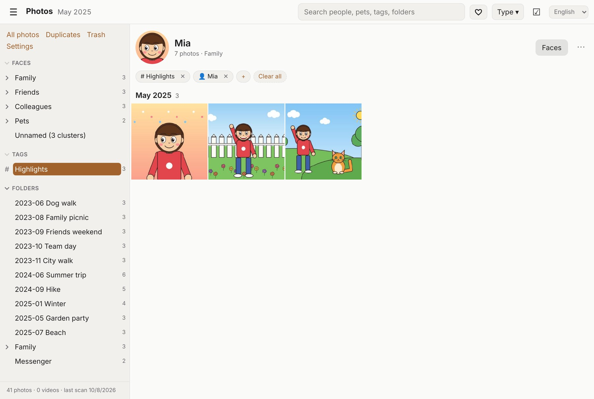
The screen at a glance
Everything is on one page. Here is where things are.
-
Folders menu
☰ shows or hides the sidebar on narrow screens.
-
Search box
People, pets, tags and folders; pick several to combine them.
-
Favorites ♥
Show only the photos you have hearted. Also found by typing favorite in the search box.
-
Type
Tick what to show; nothing ticked shows everything. Photos: still pictures without screenshots (hover the ⓘ). Videos: stand-alone videos. Live Photos: photos that come with a short clip. Screenshots: pictures of a phone or computer screen.
-
Year
Jump straight to a year.
-
Select ☑
Pick photos to move, tag or trash.
-
Quick links
All photos · Duplicates · Trash · Settings.
-
Folders
Your folders, with counts. Tags, Faces and Drives appear here when you have them, and so does Locations when maps are on.
-
Timeline
Months with counts. Click a photo to open the viewer.
-
Language
Switch English / German.
-
Status
Scan, thumbnail and drive status at the bottom of the sidebar.
A typical session
Plug in the drive and double-click Start shoebox. Scan (quick when little has changed) and open the photo app. To add the photos of an event, copy their folder onto the drive in Finder (named like 2025-08 Holiday) and Scan again: if some files were on the drive already, the Control Panel offers to delete the new copies. Then tag and sort. Look at Duplicates now and then, and run the Backup check after every backup.
Get started in three steps
macOS, Intel (10.13 or newer) and Apple Silicon. Nothing to install to browse and scan; face and pet recognition are add-ons you install from the launcher.
-
Unpack it and choose where it lives
Unpack shoebox-macos.tar.gz from the release (double-click it in Finder). You get one folder, shoebox-macos (the name says which system it is for), with the program shoebox, Start shoebox.command, the folder recognizer (the add-ons installer) and this guide in guide. Keep these files together; never pull single files out of the folder. Then pick one of two ways:
On the drive (best if you take the drive to other computers): copy the whole folder shoebox-macos into the top folder of your photo drive, next to your photo folders, so you have
/Volumes/MyDrive/shoebox-macos/. Do not create a .shoebox folder yourself: shoebox makes it on the drive at the first scan. Add-ons you install later are stored inshoebox-macos/recognizeron the drive and travel with it. Other systems get their own folder next to it (for example shoebox-windows, when it is published), each with its own add-ons; start shoebox from the folder of the system you are on.On your computer: move the whole unpacked folder shoebox-macos somewhere you will keep it (Documents, for example, not Downloads) and leave its files together. Open it from there whichever drives you plug in; add-ons are installed once into its recognizer folder and used for every drive. The library index (a hidden .shoebox folder) is on each drive in both ways.
-
Start the Control Panel
Double-click Start shoebox.command (on the drive, or in the folder on your computer). A Terminal window opens (leave it open) and the Control Panel appears in your browser. If macOS asks, right-click the file and choose Open.
-
Add-ons, scan, then open
Only if you want people and pets recognized: in step 1, Add-ons, tick what you want (Faces, Pets, or both; each works without the other) and press Install the selected add-ons. The Control Panel lists what is downloaded: the Python and OpenCV program (about 200 MB, once, for all add-ons), Faces (about 40 MB) and Pets (about 140 MB). Internet needed, a few minutes. Add-ons can be added later, and a computer of another kind (Intel or Apple Silicon) needs them installed once on that computer. Python and OpenCV is always installed with the first add-on (its box is ticked and cannot be unticked). Until an add-on is installed, its recognize button stays grey and says why. Click the heading Add-ons to fold the step away; it stays folded once everything is installed. Then add your drive (click it, or type
/Volumes/MyDrive), press Scan, then Start photo app. The first scan reads every file once and takes a while on a big drive; later scans only look at what changed. When it finishes, the tabs Moved, Changed, Missing and Already on the drive (each with its count) list exactly which files they mean; for new files you already had, the tab shows the older copy right next to each one.
Control Panel tasks
- Scan
- find new, moved and changed photos. Fast: it only looks at what changed since the last scan, and the tabs list what this scan changed. Run it after you move, rename or add photos. It also lists new copies of files the drive already had.
- Verify
- check that nothing was lost or damaged. It re-reads every file and compares it with what the index remembers, which finds files that were silently damaged on the drive. Slow, so run it now and then (every few months, or before you rely on a backup), not after every move. Moves are not its business: a moved photo has its new place in the index and passes. A photo whose path is gone but whose content is still on the drive elsewhere (a duplicate you deleted) is listed as "relocated", not as a failure. Only content that is nowhere on the drive any more counts as missing. If files are gone, a button appears after the check (and after a scan) that forgets their records: they are removed from the shoebox index, its database on the drive. No photo file is touched.
- Recognize faces
- find the faces in your photos (and, with Recognize pets, cats and dogs). Needs the Faces add-on.
- Recognize horizontal faces
- also find faces lying on their side or upside down (slower). Needs the Faces add-on.
- Recognize pets
- find cats and dogs; they show up among the faces. Needs the Pets add-on, not the Faces one.
- Face stats
- how recognition went
- Backup check
- is the 2nd folder a complete copy of the 1st?
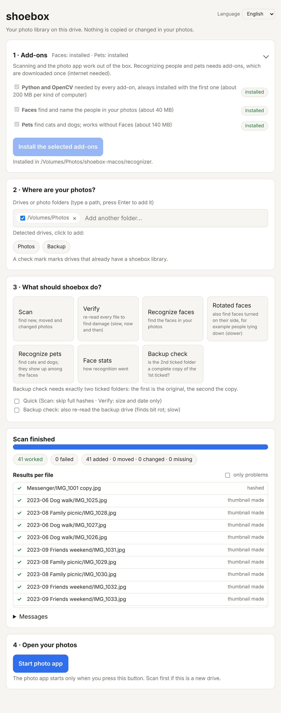
Several computers and systems
- Where the add-ons are looked for: first in the recognizer folder next to the shoebox program you started, last in the drive's own hidden
.shoebox/recognizer(only used when the program folder has nothing). So a shoebox folder on your computer is used for every drive, even if a drive holds models too. - Models and Python are different things. The models (Faces, Pets) are the same on every computer. Python and OpenCV is built for one kind of computer: Intel Mac, Apple Silicon Mac, Linux, Windows. If you take a drive with shoebox-macos from an Intel MacBook to a newer one, step 1 shows Python and OpenCV: not installed on the newer one and the recognize buttons are grey. Press Install the selected add-ons once there: only the missing Python is downloaded, the models are kept. Both kinds then live side by side in the same recognizer folder, and each computer uses its own.
- Mac and Windows on one drive: copy both folders to the drive's top folder:
shoebox-macosandshoebox-windows. Each has its own recognizer folder, so models you install in one are not shared with the other. Start shoebox from the folder of the system you are on. Both use the same hidden.shoeboxindex on the drive. Add-ons are not available on Windows yet.
Good to know
- Videos get preview images if you put a static ffmpeg next to the program (
ffmpegin the same folder as shoebox). Without it, the browser grabs a frame instead. - shoebox keeps its index and thumbnails in a hidden
.shoeboxfolder on the drive, so the drive can move to another computer. - Closing the Terminal window stops shoebox.
The app speaks English and German: pick the language at the bottom of the sidebar.
Browse and view
Scroll through the timeline, jump by year, open a photo.
Timeline
Photos are grouped by capture date, newest first. The Year menu jumps; the month next to the drive name in the top bar shows where you are. On another page (Duplicates, Trash, Settings, Faces, …) it shows the name of that page instead. A photo without a capture date takes the month in the name of its event folder (2020-07, 2020.07, 20-07 or 20.07), or else the earlier of the file’s created and modified dates; the info panel then marks the date as estimated.
Folders
The sidebar mirrors the folders on your drive. Click one to see only its photos. Rename or move a folder from its chip.
Viewer
Click a photo. ⓘ opens the info panel: date (marked estimated when it is not the day the photo was taken), camera, size, tags, people, and buttons to open the folder or copy the path. At the bottom, GPS data shows where the photo was taken (see “Locations and maps”).
Favorites
The ♥ in the top bar of the viewer, or the key f, marks the photo as a favorite. In the timeline the same heart sits in the top right corner of each photo (it appears when you point at a photo; hearted photos always show it). Click it again to take it off. Under the hood a favorite is just your own tag favorite, kept in the index like any tag, never in the photo.
Rotate
r turns left, Shift+R right. For JPEGs this changes only the two bytes of the rotation flag; for other formats the turn exists in shoebox only.
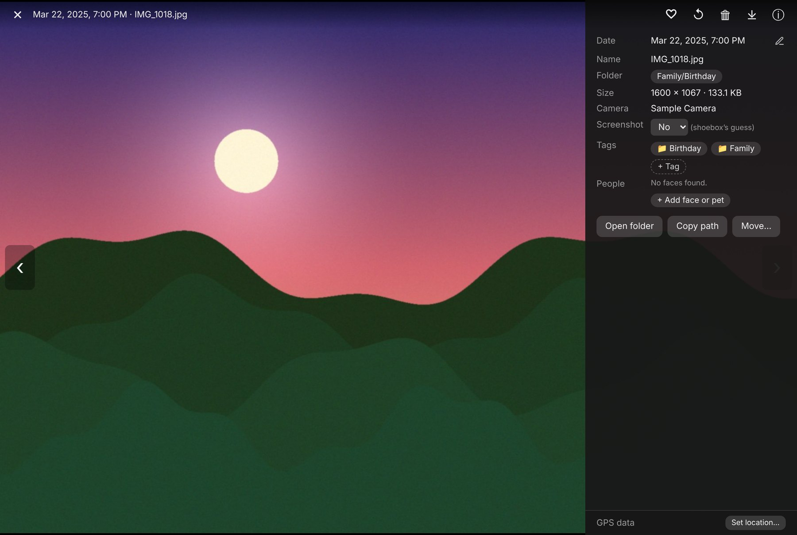
Keyboard in the viewer
- ← →
- previous / next
- i
- show / hide the info panel
- Space
- open / close the viewer (on a photo picked with the arrow keys)
- f
- add to / remove from favorites
- r · Shift+R
- rotate left / right
- Esc
- close the viewer
Find and organise
Search, select, tag and move: all of it works on many photos at once.
Search
Type in the search box: suggestions appear for tags, people and folders. Pick several and they become chips that narrow the result; × removes one, Clear all starts over. To find your favorites press the ♥ button next to Type, or type favorite (English) or favorit (German) and pick ♥ Favorites; it combines with everything else, e.g. favorites of one person or one year. With maps on (see “Locations and maps”) the suggestions also offer your places.
Type offers Photos (still pictures without screenshots), Videos, Live Photos and Screenshots; tick any of them, and nothing ticked shows everything. To leave screenshots out of the timeline, tick Photos, Videos and Live Photos but not Screenshots; to see only screenshots, tick just Screenshots. Shoebox recognises a screenshot from the file (a PNG without camera data, a name like Screenshot or Bildschirmfoto, the size of a phone or computer screen) and from the picture itself (large areas of one colour). It can be wrong in both directions: in the photo’s info panel, Screenshot is a drop-down that starts on shoebox’s guess; pick Yes or No to correct it, and Back to automatic returns to the guess. Your choice is kept in the library; the photo file is never changed.
Select
Press ☑, then click photos (Shift-click for a range; on the iPad just tap). “Select all” on a month heading takes the whole month.
Tag
Add tag… puts your own tag on the selection. Tags live in shoebox’s index, never in the photo files.
Move
Move… asks for a folder. New folders are created, nothing is ever overwritten, and RAW, Live Photo and sidecar files move along. The photos’ own tags always go with them. “Keep folder tags” also keeps the old folder’s tags as own tags; folder tags always follow the new folder.
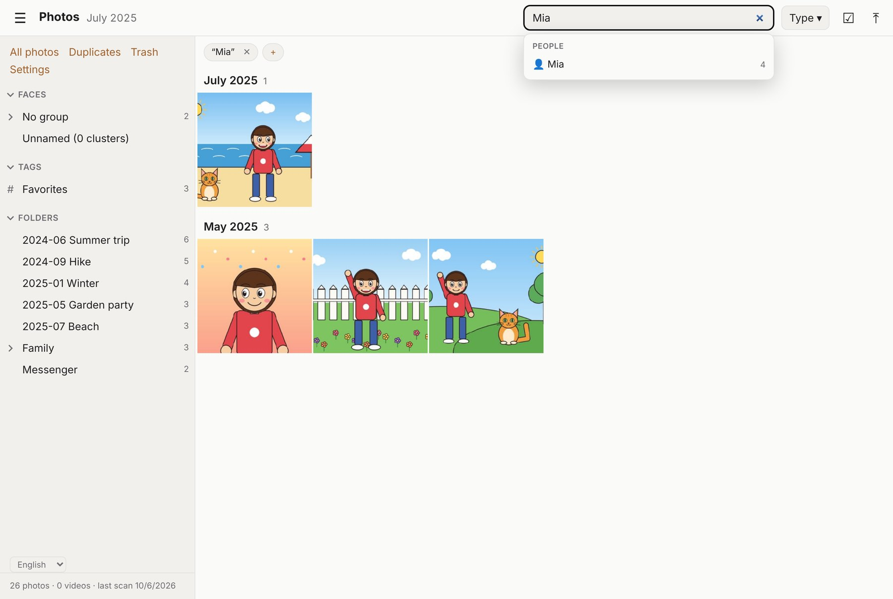
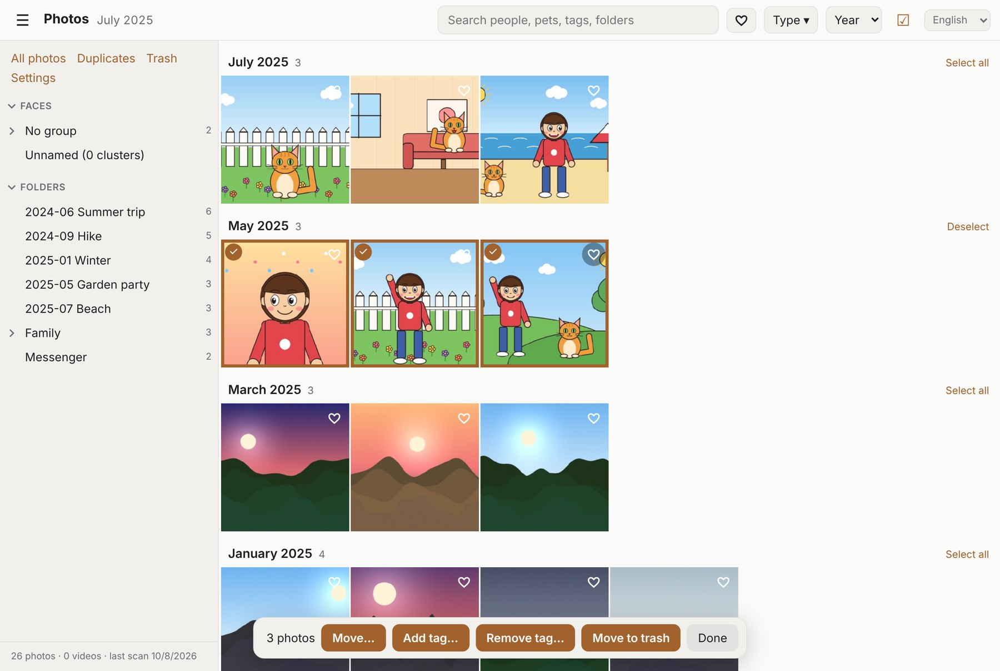
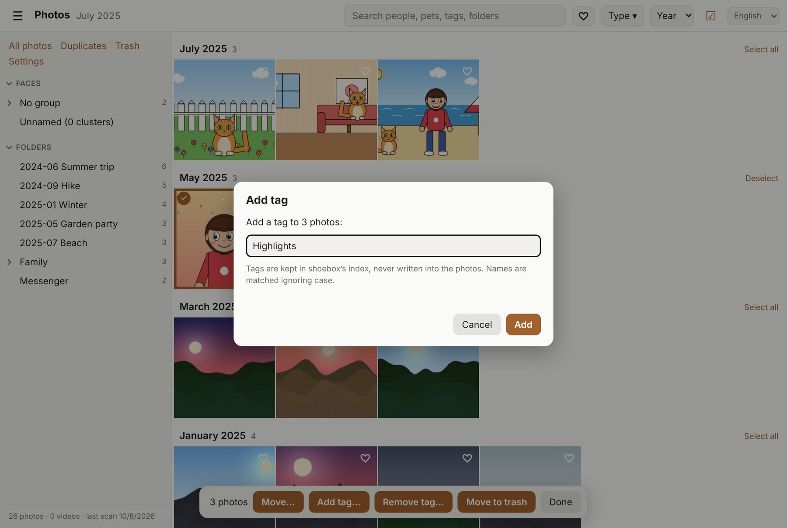
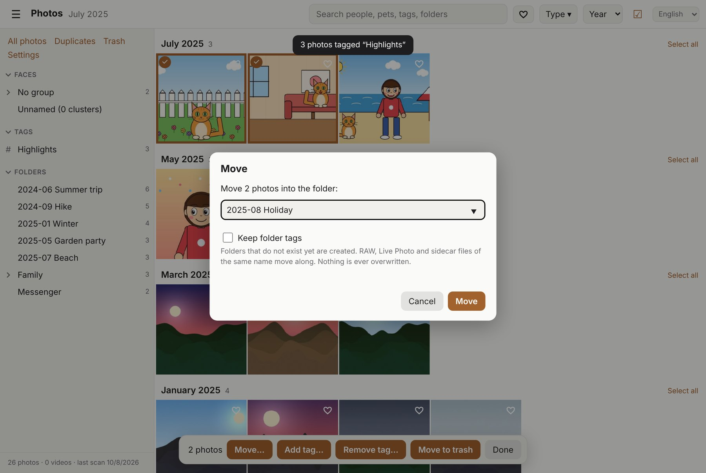
Adding photos, duplicates and trash
Adding photos
Copy or move the photos onto the drive in Finder or File Explorer, which keeps their dates, ideally into a folder named YYYY-MM Event, and press Scan. If the scan finds new files the drive already had, the Control Panel marks them already on the drive and offers Delete the new copies (to the trash, or for good). The older original stays and gets the deleted copy’s folder name as a tag. Settings sets how event folders are named in suggestions (for example YY.MM_Event); existing folders are not renamed and all forms are recognised.
Duplicates
Duplicates lists four kinds: identical, same photo in another size, original and edited, and look-alikes. Tick delete this copy on what you want gone; the best file stays and at least one per group always does. Tags and capture dates of a removed copy carry over.
Shortcuts
Clear Same Folder Copies and Clear Lower Quality Copies clean up the clear-cut cases in one go.
What to do with a group
Every group has up to two buttons at its top right. Keep all means: these files stay, and they belong together. Different photos (only on groups of look-alikes) means: these are separate shots, not copies of each other. Either way nothing is deleted and no photo is touched; shoebox only makes a note in its own database on the drive, so it never offers this group again. The note follows the photos if you move or rename them. Keep all also lists the others as Versions in the info panel of each photo. Photos you have decided about are also left alone by Clear Same Folder Copies and Clear Lower Quality Copies. To delete instead, tick delete this copy, or open a look-alike photo, compare them large and press Keep this one: after you confirm, all the others go to the trash.
Trash
Nothing is deleted right away. Trashed photos wait in .shoebox/trash on the drive: Put back or Delete for good. Moving photos to the trash is off by default: switch it on once in Settings (Allow move to trash).
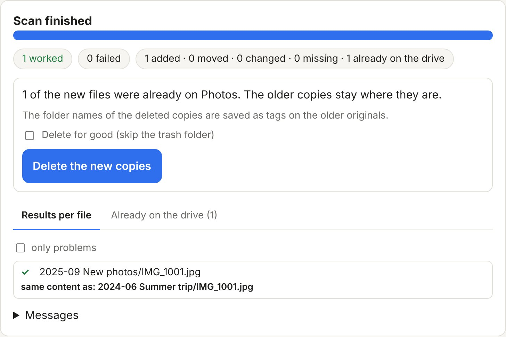
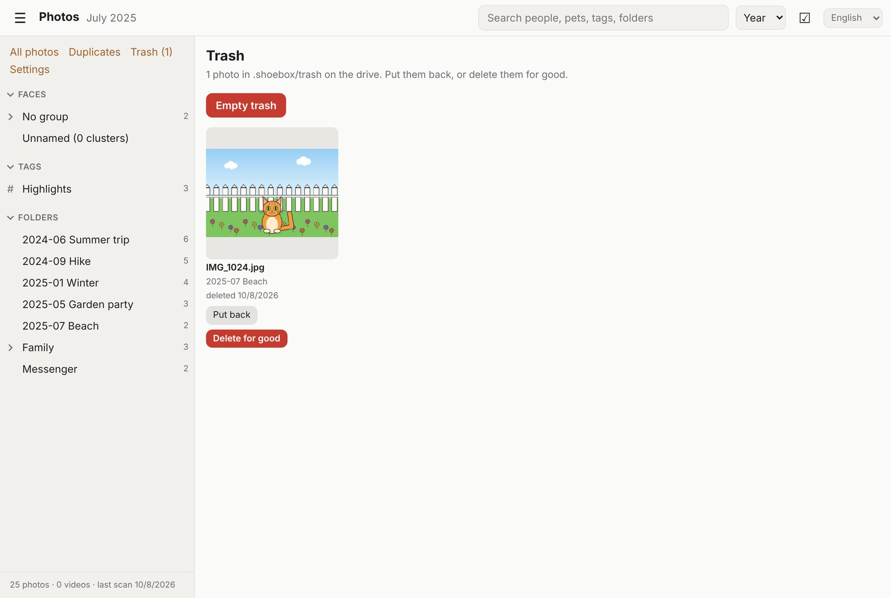
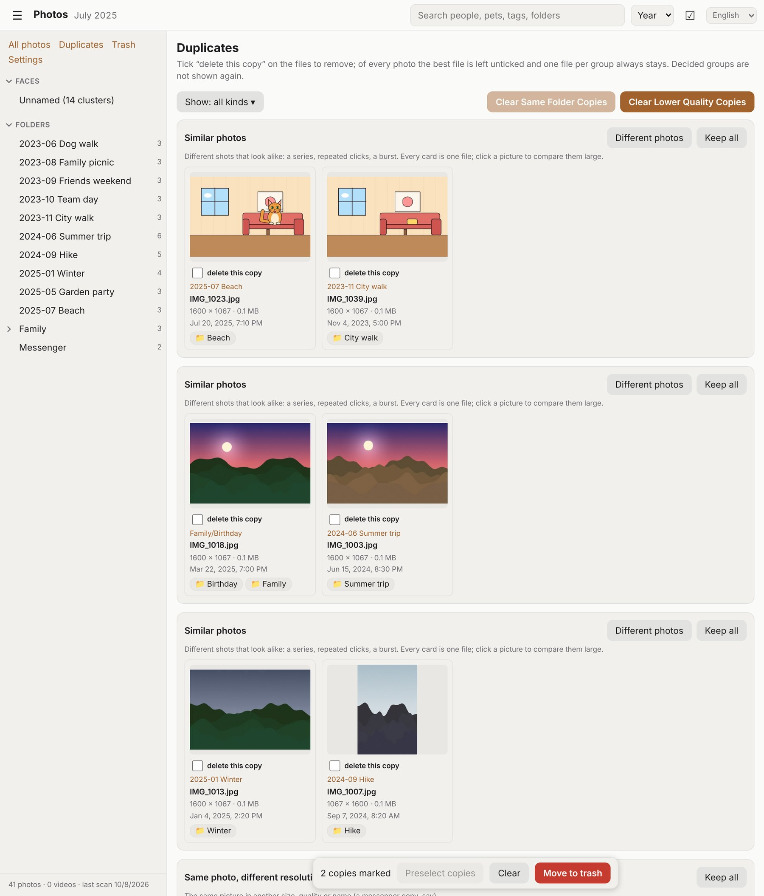
People and pets
Optional: shoebox finds faces, cats and dogs; you give them names.
Find them
Install the add-ons once: in the Control Panel, step 1 Add-ons, tick what you need (Faces, and Pets for cats and dogs) and press Install the selected add-ons. They are stored in the recognizer folder next to the shoebox program: on the drive if shoebox lives on the drive, otherwise on your computer for every drive. Then close the photo app and run Recognize faces (and Recognize pets) in the Control Panel. A Faces section appears in the sidebar.
Name them
Under Unnamed, shoebox shows cards of similar faces. Type a name once and the whole card is named; later, confirm (✓) or reject (✗) the suggestions. The next two pages show every step, with groups and the buttons for strangers and false finds.
In the viewer
The info panel lists who is on the photo and draws a box around each face or pet. Click a name to see all their photos, or draw a box around a face or pet that was missed.
Search
Names work in the search box like tags, and so do kinds such as “all cats”. Combine a person with a tag, a folder or another person.
New photos
Recognition does not start by itself after a scan yet. Close the photo app and run Recognize faces again: it only looks at the new photos.
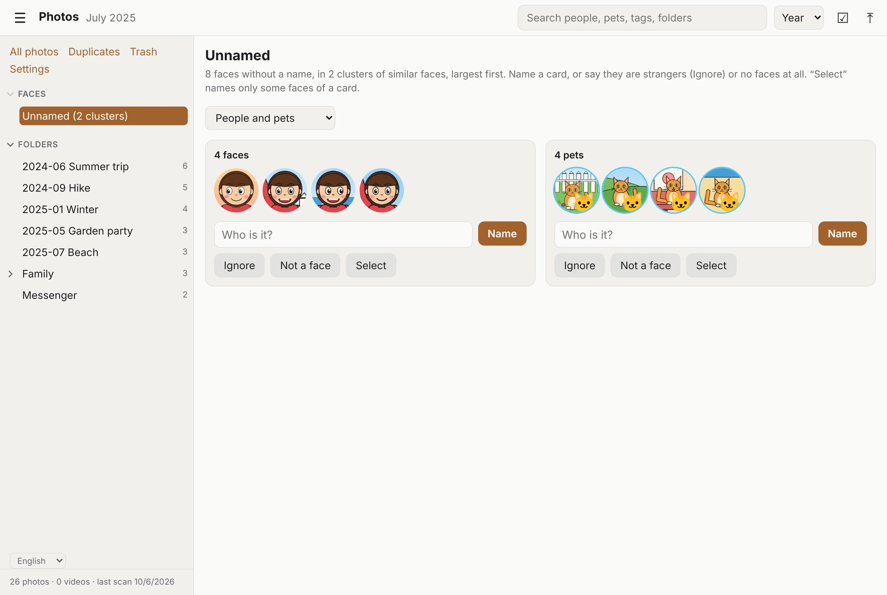
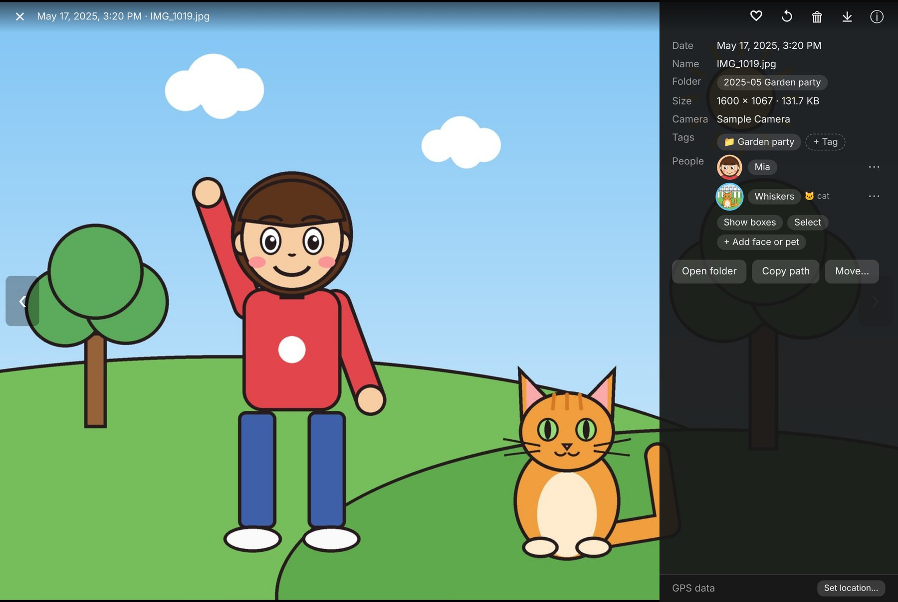
Sample pictures are drawn comics, not real photos.
Tag faces, step by step
After Recognize, every face waits for a name. You do not have to name them all.
-
Open Unnamed
In the sidebar, open Faces and then Unnamed. Each card holds faces that look alike, the biggest card first. Cats and dogs have cards of their own; the menu above the cards chooses People, Pets or both.
-
Name a card
Type the name once and press Name: the whole card is named. Start typing to pick a person you already have (on a card of pets only cats and dogs are offered, and the other way round), or choose + New person (on a card of pets it reads + New cat, + New dog or + New pet). After that shoebox suggests more faces of them (Looks like Mia): confirm with ✓ or reject with ✗.
-
Strangers and false finds
Ignore is for strangers, and for faces on posters, screens and pictures: nobody needs to name them. Not a face (for pets Not a pet) is for false finds that are no face at all. Nothing is deleted and no photo is touched; shoebox only notes the decision in its own database.
-
Only some faces of a card
Select lets you tick the faces yourself. The buttons then work on those only: Name 2, Ignore 2, 2 not a face. Use it when a card mixes two people.
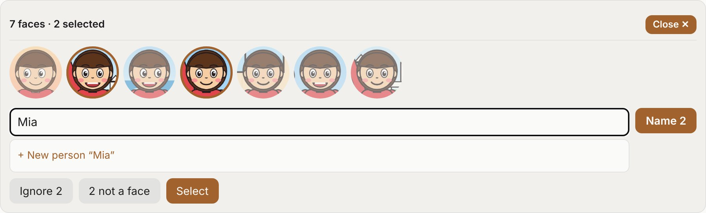
Several faces in a photo, and groups
Tick faces in the viewer. Sort people into groups such as Family, Friends and Colleagues.
In a photo
Open a photo and its info panel (ⓘ). Under People every face has its picture and a name, or + Name. Select turns the list into a checklist: tick several faces (All unnamed ticks every face nobody has named), then Ignore or Not a face for all of them at once. + Add face or pet draws a box around a face or pet that was missed. Say what it is first, Person, Cat or Dog, then name it: the list offers only names of that kind (no people when you name a cat), and + New person, + New cat or + New dog adds a new one. The kind of a drawn pet cannot be changed later; delete the box and draw it again.
Groups
Faces shows people by group. New group… makes one; Groups… renames, reorders and deletes groups; to reorder, drag a row by the dotted handle on its left (or focus the handle and press Alt+↑/↓). A person is in one group at most, and deleting a group deletes nobody.
Put people into groups
Use ⋯ on a person, then Move to group…, or drag the person onto a group in the sidebar. Pets work the same way: a group Pets can hold the dog and the cat.
Corrections
The same ⋯ menu has Merge into… for two cards of one person. On a person’s page, Review faces lists Confirmed, Suggested, Maybe and Not them, and a face marked by mistake can go back with ↺. Calibration (Face check, Pet check) shows what recognition found: small faces, scores and false finds.
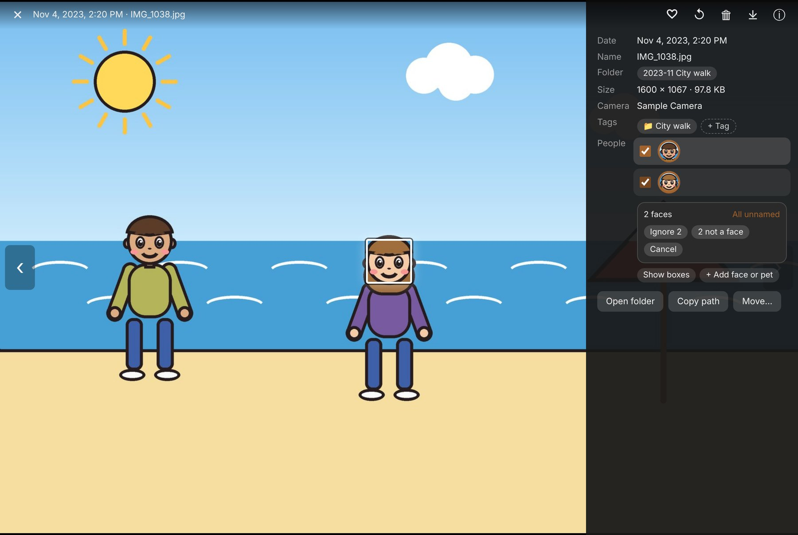
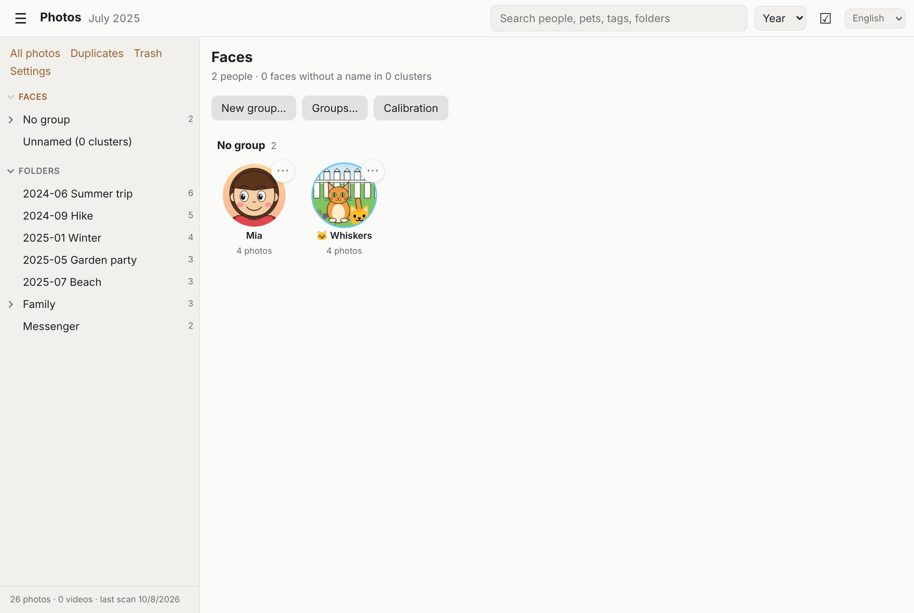
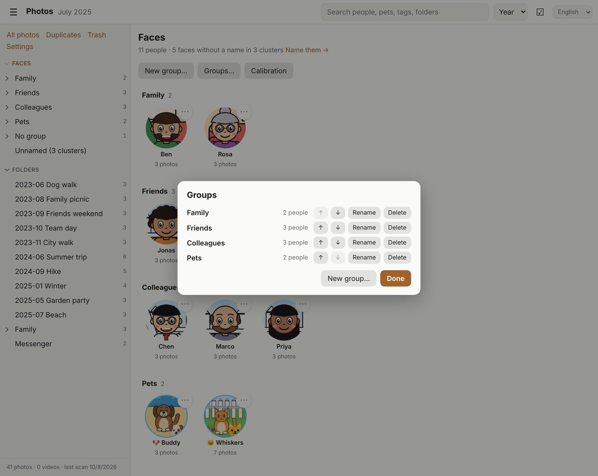
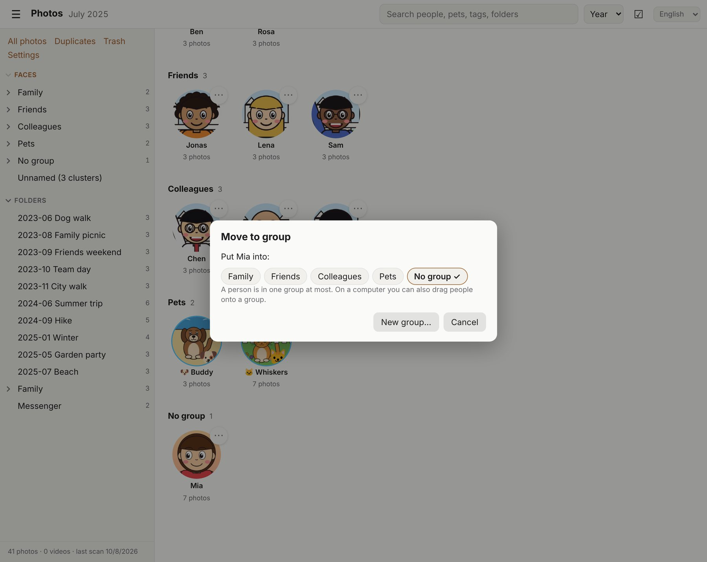
Locations and maps
Optional: where your photos were taken, on a map. Off until you turn it on.
Turn maps on
Open Settings and tick Show maps (OpenStreetMap). The maps are drawn in your browser from OpenStreetMap, so this is the one place where shoebox needs the internet: OpenStreetMap sees which parts of the map you look at, never your photos or their names. shoebox saves no map pictures on the drive (your browser may keep some in its own cache). With the box unticked nothing is ever loaded from the internet.
In a photo’s info
Where the file has GPS data, GPS data in the info panel shows the position and, with maps on, a small square map with a pin on it, fixed to the bottom of the panel. Without internet the map says Offline instead. A photo without GPS data shows no map at all, only the heading with a Set location… button.
Give a photo a location
Set location… (right next to the heading GPS data) opens a dialog with a map and two fields, latitude and longitude, which are always both there and follow each other: click the map to place the pin, or type the numbers (a point or a comma both work; latitude −90 to 90, longitude −180 to 180, anything else is refused). With maps off, only the fields work. The location is saved in shoebox only: the photo file is not changed, and it stays with the photo if you move it. A location you gave can be changed or removed again; a location that is in the file itself is never changed.
The Locations page
With maps on, Locations appears in the sidebar below Folders. It opens a world map with a pin for every photo that has a location; pins close together are grouped into a number and split apart as you zoom in. Click a pin or a group and the screen splits: the map on the left, the photos from there on the right, like the timeline. Click a photo to view it; the arrow at the top of the list folds it away.
Places
A place is a named area, like “Home” or “Island XY”. Press New place, click two opposite corners on the map and give it a name: every photo with a location inside the area belongs to it, now and later. Places are listed under Locations in the sidebar with their number of photos; click one to see its photos. You can also search for a place by name. If the search is empty, picking a place opens it on the map, like a click in the sidebar (a Type filter is dropped then, as on every click in the sidebar). If the search already has chips (a folder, tag, person, pet, favorites ♥), the place joins them as a chip 📍 and you stay in the timeline: all chips must match, so “Home” + “Anna” shows Anna’s photos taken at home. A second place replaces the first. The 🗺 on the chip shows the place on the map, and a place chosen on the map goes along when you add another chip. In the list on the right you can Rename a place, Draw area again or delete it; only the place goes, never a photo or its location.
Places and the locations you set are written to userdata.json next to the index on the drive, together with your tags and people.
Drives, backups and the iPad
Several drives
Start shoebox with more than one drive and each one appears in the sidebar. All drives gives you one common timeline across all of them. Manage drives, next to Duplicates, Trash and Settings, opens a page that does not depend on the drive you are looking at: backups, photos that exist on more than one drive, and people across drives. A drive that is unplugged is shown as offline. The drive you are looking at is filled in with the accent colour, and so is the page you have open under it (All photos, Duplicates, Trash, Settings), so you can always see which drive's trash you are in.
Backup check
Choose the original first and the backup second. shoebox compares the two indexes (no photo is read) and lists what is not on the backup yet, what differs and what exists only on the backup. Also re-read the backup finds bit rot.
iPad & other devices
In Terminal: shoebox serve /Volumes/MyDrive --lan. It prints an address and a PIN; open the address in Safari on the same Wi-Fi and enter the PIN once. Swipe in the viewer, tap to select.
Command line (optional)
shoebox scan <folder>- index new, moved and changed files
shoebox verify <folder>- re-read files and compare with the index
shoebox recognize <folder> [--pets]- find faces (and pets)
shoebox backup <original> <backup>- is the backup complete?
shoebox serve <folder> [--lan] [--pin …]- open the photo app
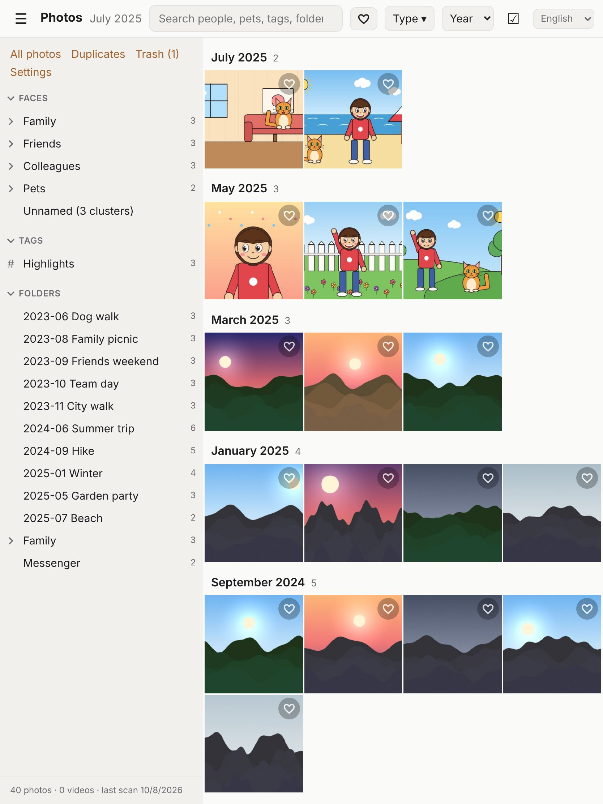
Your photos are safe
The design rule is simple: shoebox reads your originals and never writes anything into them.
-
Read-only
Metadata, thumbnails, tags and locations you set are kept in the index on the drive, never inside a photo. Capture dates and created dates never change.
-
Guarded
Every scan is checked: size, dates and a full hash before and after. Any difference is an error.
-
Only on your command
Originals change only through your actions: move, rename, trash. Always a rename, never a copy, and only if the file still matches the index. The only other thing shoebox removes is a new copy of a file the drive already had, and only when you press the button after a scan.
-
Local
No cloud, no account. By default only this computer can connect; other devices need
--lanand a PIN. The one exception is the optional maps (Settings, off by default): your browser then loads map pictures from OpenStreetMap.
If something looks off
The grid is empty. Run Scan in the Control Panel first, then start the photo app.
New photos are missing. Scan again. It is quick: only new and changed files are read.
A video has no preview. Add ffmpeg (see “Good to know”) and restart the photo app.
The iPad cannot connect. Same Wi-Fi? Started with --lan? Enter the PIN printed in Terminal. Restarting shoebox asks for the PIN again.
A drive shows as offline. Plug it in again; shoebox picks it up when you reload.
A map is empty or says Offline. Maps need the internet. Check the connection and open the photo again; without it everything else works as before.